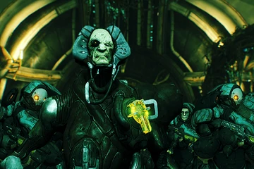
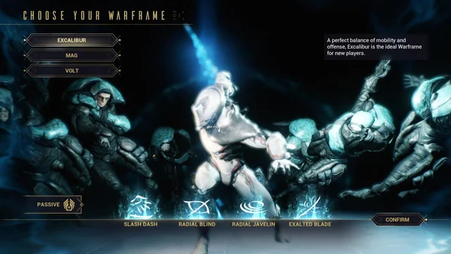

Ülesanne:
Sellele lehele, igaüks kes ennast kirja on pannud, kirjutab ühe lehe sektsiooni oma lemmikmängust. Mida selle mängu kohta kirjutada:
Mängu nimi:Warframe
- Platvorm:arvuti, ps, xbox, nintendo, Ios, Android; väljalaskeag on 2013, Firma mis arendas seda mängu on Digital Extremes Warframe on võrgumäng, mis sisaldab tulistamis-, RPG- ja hiilimismängude elemente(stealth).
Title screeni pilt:
- et tutvuda mängudega siin on 2 linki informatsiooniga mängu sait mängu info otsing
- Minu jaoks saatis see mäng mind kogu lapsepõlve, mäng huvitas isegi mu isa, kellega läheme suvel Kanadasse arendajaid vaatama, kes teab? Võib-olla lähen harjutama oma lemmikarendajatega, kõikidel platformil on sama mängu kogemus.
Lugu:
kutsuti Tennoks. Tera ja relva sõdalased: Warframe'i soomuse meistrid. Need, kes vana sõja üle elasid, jäid varemete vahele triivima. Nüüd on neid jälle vaja. Grineerid oma tohutute armeedega levivad üle kogu päikesesüsteemi. Üle tähtede kajab üleskutse, mis kutsub Tenno iidsesse paika. Nad kutsuvad sind. Laske Lotusel teid juhendada. Ta päästis teid teie krüostaasikambrist ja andis teile võimaluse ellu jääda. Grineer leiab su üles; sa pead olema valmis. Lotus õpetab teile sõjaraamide viise ja nende jõudude avamise saladusi. mängu protsess
warframeˇis on vaja täita missioone kogu päikesesüsteemis erinevatega sisuga, sa võid täita seda kas vaikselt või lärmakalt erinevatega relvadega ja liikumisega igal isikul on oma variant kuidas seda täita